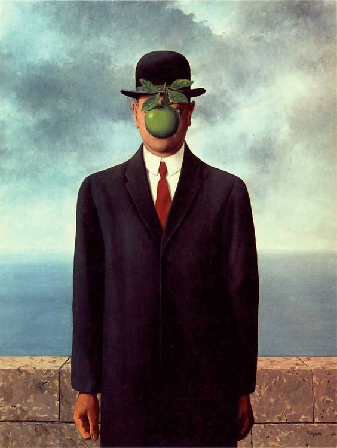
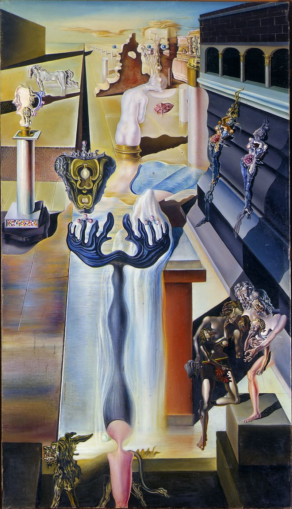
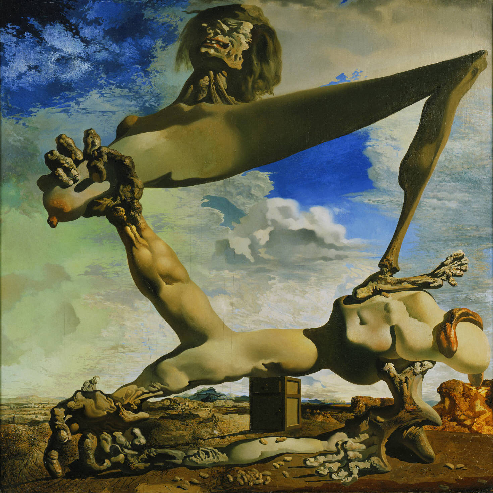
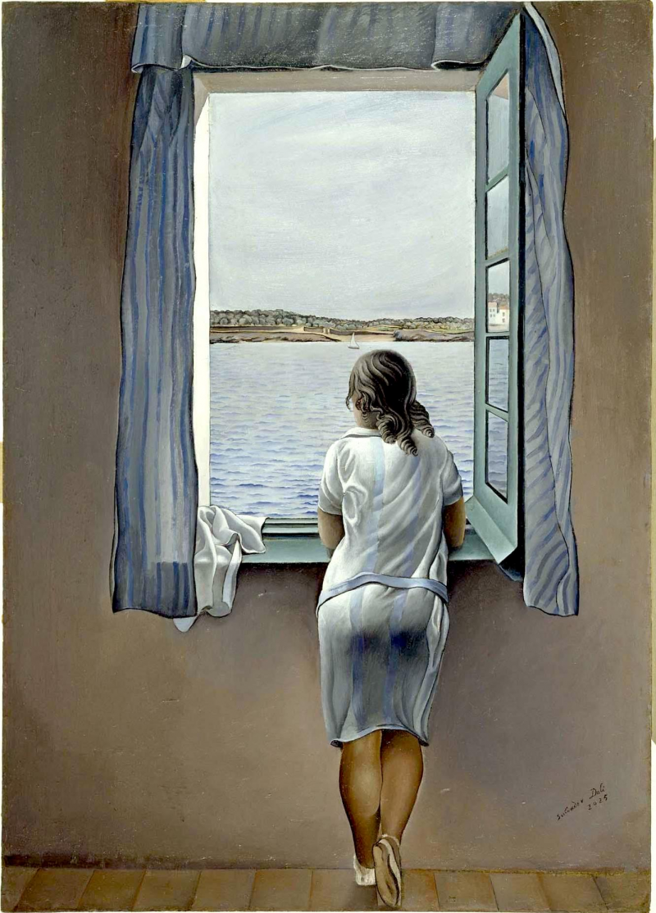

OBRAS MÁS DESTACADAS
UN POCO DE HISTORIA

El surrealismo fue un movimiento artístico y literario que surgió en la década de 1920, principalmente en Europa, como una reacción contra las restricciones y convenciones de la sociedad y el arte de la época.
Este movimiento buscaba explorar el mundo del subconsciente, los sueños y la imaginación a través de obras que desafiaban la lógica y la realidad convencional. Aquí tienes un resumen de la historia del surrealismo
La filosofía del surrealismo se basa en la idea de explorar y liberar las profundidades del subconsciente y la mente humana para revelar verdades ocultas, emociones y deseos a través de la creatividad artística y literaria. Aunque no existe una filosofía única y cohesiva que abarque todo el movimiento surrealista debido a las diferencias entre sus miembros, se pueden identificar varios conceptos y principios clave que caracterizan la filosofía subyacente del surrealismo. El movimiento surrealista también tuvo un impacto en la literatura, con autores como André Breton, Louis Aragon y Paul Éluard escribiendo poesía surrealista que exploraba los rincones más oscuros de la mente humana.
La historia de la vanguardia surrealista está estrechamente relacionada con la figura del poeta y escritor André Breton, quien en 1924 publicó el "Manifiesto Surrealista", un texto fundamental que establecía los principios y objetivos del movimiento. Breton y otros artistas que compartían sus ideas creían en la liberación de la mente humana de las restricciones de la razón y la lógica, abrazando el poder de lo irracional y lo automático. Querían explorar el mundo de los sueños y el subconsciente para revelar verdades ocultas sobre la psicología humana y la sociedad.
El surrealismo abarcó diversas formas artísticas, incluyendo la pintura, la poesía, la fotografía, el cine y el teatro. Algunos de los artistas más influyentes asociados con el movimiento surrealista incluyen a Salvador Dalí, René Magritte, Max Ernst, Joan Miró y André Masson. Cada uno de estos artistas tenía su estilo único y su enfoque particular, pero todos compartían una fascinación por lo absurdo, lo ilógico y lo desconcertante en sus obras.
La Segunda Guerra Mundial y sus consecuencias políticas llevaron a una disolución gradual del movimiento surrealista en la década de 1940. Sin embargo, su legado perdura en la cultura contemporánea, influyendo en movimientos artísticos posteriores como el pop art y el posmodernismo. El surrealismo sigue siendo una parte importante de la historia del arte y la literatura, recordándonos la capacidad de la creatividad humana para explorar lo desconocido y desafiar las normas establecidas.
El contexto histórico y cultural: El surgimiento del surrealismo se dio en un período de agitación cultural
después de la Primera Guerra Mundial. La sociedad europea estaba lidiando con las consecuencias de la guerra, la revolución rusa y el auge de las teorías psicoanalíticas de Sigmund Freud. Estos eventos influyeron en la búsqueda de nuevas formas de expresión artística y en la exploración de la mente humana.
OBRAS MÁS DESTACADAS

"El hombre invisible"
Artista: Salvador Dalí.
Año: entre 1929 y 1933.
Medio/tecnica: Oleo sobre lienzo.
Medida: 140 x 81 cm
Se encuentra: Museo Reina Sofía en Madrid.

"Construcción blanda con judías hervidas"
Artista: Salvador Dalí.
Año: 1936.
Medio/tecnica: Oleo sobre lienzo.
Medida: 100 cm x 99 cm (las dimensiones generales de la pantalla son variables).
Se encuentra: Philadelphia Museum of Art.

"Muchacha en la ventana"
Artista: Salvador Dalí.
Año: 1925.
Medio/tecnica:Oleo sobre lienzo.
Medida: 105 x 74.5 cm.
Se encuentra: Museo Reina Sofía en Madrid.